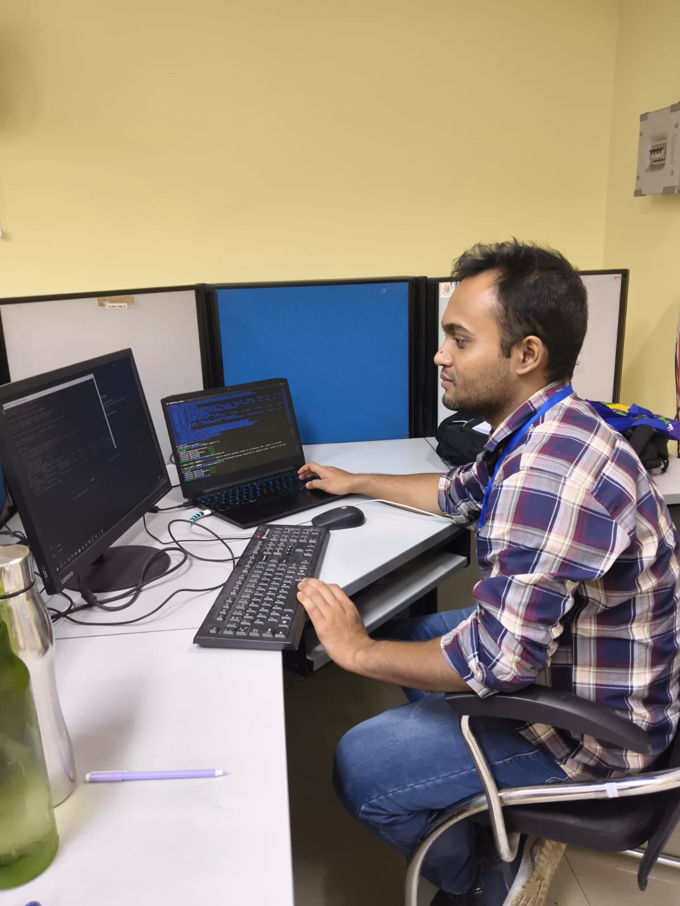

Labs and simulation
- Cisco Packet Tracer
- GNS3
- EVE-NG
- VirtualBox
- VMware Workstation

Project Associate I, CSIR-CMERI Cooch Behar, West Bengal, India
Network and infrastructure engineer
I design, secure and automate reliable networks. My work covers routing and switching, network security, server administration and the monitoring that keeps it all visible.
I'm a B.Tech Computer Science graduate working on network management and server administration at CSIR-CMERI. I'm strongest in TCP/IP, routing and switching, VLANs and troubleshooting, and I practise new designs in Cisco Packet Tracer and GNS3 labs before they go near real equipment.
I'm building a career in enterprise networking, with a focus on network security and automation. I like networks that are documented, monitored and boring to operate.
bhaskar-roy# show running-config | section profile ! hostname bhaskar-roy description Network and infrastructure engineer location Cooch Behar, West Bengal, India role Project Associate I, CSIR-CMERI education B.Tech CSE, Diploma in Mechanical Engineering focus routing, switching, network-security, automation studying cisco-ccna-concepts ! end
What I work with, grouped the way a network is built: from addressing and routing up to security, operations and automation.
The software I use to build labs, map networks, watch them and capture what is happening on the wire.
Lab files, scripts and documentation, loaded live from my GitHub profile.
August 2026 to present
CSIR-CMERI, Central Mechanical Engineering Research Institute
Network management and monitoring, server administration, user access and day-to-day upkeep of the institute's IT systems.
August 2022 to August 2025
Cooch Behar Government Engineering College, West Bengal
CGPA 7.2 / 10. Networking fundamentals, TCP/IP, routing, switching and subnetting.
August 2018 to August 2021
Jalpaiguri Polytechnic Institute, West Bengal
CGPA 7.8 / 10.
Studying: Cisco CCNA concepts, covering routing, switching, IP services and security fundamentals.
Lab setups, equipment and moments from work. Select a photo to enlarge it.
Open to network engineering and infrastructure roles. Email is the quickest way to reach me.
$ ping bhaskar
64 bytes from bhaskar: reply received